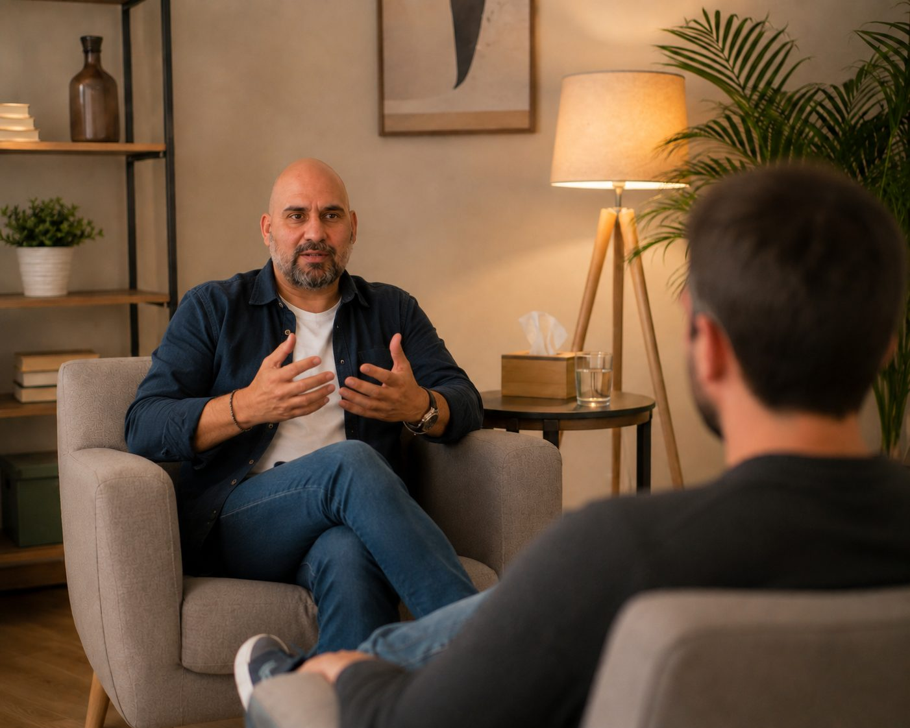
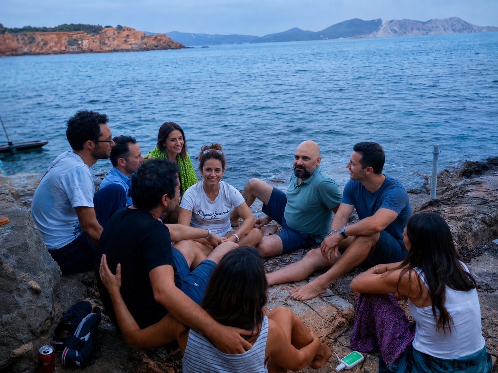

Terapeuta en Tarragona · Online · Terapia individual y de pareja
Hay personas que buscan respuestas.Otras descubren que entender nunca fue el problema.
El problema era seguir viviendo siempre de la misma manera.
Si llegas aquí por ansiedad, una ruptura, un duelo o una crisis existencial, estás en el lugar adecuado. Y si además llevas años repitiendo la misma historia —la misma pareja, el mismo límite que no pones—, también.
Pedir sesión →
+20
años de práctica
+2.000
personas acompañadas
100%
por recomendación
+20
años acompañando procesos de transformación
+2.000
personas acompañadas en sesiones individuales
+500
personas en talleres y retiros
4ª
promoción de formación activa
01
Todos construimos un personaje para sobrevivir.
La ansiedad, el bloqueo, la dependencia emocional. No son problemas distintos. Son el mismo personaje protegiéndose de maneras distintas.
Leer más →02
Quizá no eres tú quien decide.
Quizá es una forma de protegerte que construiste hace años y que hoy sigue intentando salvarte de peligros que ya no existen. A eso lo llamo "el personaje".
03
No trabajamos el síntoma. Trabajamos al personaje.
Cuando ves quién está decidiendo por ti y para qué, cambia lo que miras. Y cuando cambia lo que miras, cambia lo que haces.

"No creo que estés bloqueado. Creo que llevas demasiado tiempo protegiendo una versión de ti que ya no existe."
Individual, pareja, grupal y para profesionales.
Sesión individual
Presencial en Tarragona u online con personas de todo el mundo en castellano. 60 minutos. Sin compromiso de continuidad.
Ver más →Terapia de pareja
La pareja no es el problema. Es el espejo de lo que cada uno trae. Trabajo la dependencia, el abandono y los patrones relacionales.
Ver más →Talleres y retiros
Talleres vivenciales de un día o fin de semana. Retiros de 4-5 días en entorno natural. El grupo hace lo que la sesión no puede.
Ver fechas →Supervisión · Grupos · Conferencias
Grupos semanales, supervisión clínica para terapeutas y ponencias para empresas y universidades.
Consultar →
El personaje que te está matando
5 vídeos. No te explican nada nuevo. Te muestran lo que ya sabes pero no puedes ver. La puerta de entrada si no estás listo para el trabajo individual.
Ver el curso →El Punto de Inflexión
5-6 semanas de proceso individual intensivo. Para personas que ya no pueden seguir igual. Tres modalidades desde 947€.
Ver el programa →Lo que ocurre cuando el trabajo es real.
Las historias están anonimizadas y algunos detalles se han modificado para proteger la identidad de las personas, manteniendo intacto el proceso terapéutico.
12 años saltando de relación en relación.
Sabía exactamente por qué elegía siempre el mismo tipo de pareja. Había leído libros, hecho terapia y entendía su patrón. Pero seguía repitiéndolo.
No trabajamos la relación. Trabajamos el personaje que necesitaba sentirse imprescindible para sentirse valioso.
Tres meses después había dejado de perseguir personas que no podían quererle como necesitaba. Y por primera vez estaba tranquilo estando solo.
18 años trabajando en una profesión que odiaba.
No tenía ansiedad. Tenía una vida que ya no podía sostener. Durante años creyó que necesitaba motivación.
Lo que necesitaba era dejar de obedecer una identidad construida para agradar.
Cuatro meses después había tomado decisiones que llevaba años aplazando. No porque desapareciera el miedo. Sino porque dejó de permitir que el miedo decidiera por él.
Ocho años intentando controlar la ansiedad.
Había probado respiración, meditación, medicación y distintas terapias. Cada vez que la ansiedad desaparecía, terminaba volviendo.
No trabajamos para quitar la ansiedad. Trabajamos para descubrir qué estaba evitando cada vez que aparecía.
Tres meses después seguía teniendo miedo algunas veces. La diferencia es que dejó de vivir organizada alrededor del miedo.
★★★★★
"Una de las mejores inversiones de mi vida. Llegué pensando que necesitaba respuestas y descubrí que lo que necesitaba era dejar de repetir los mismos patrones de siempre."
— Javier, 42 años
★★★★★
"Había probado psicólogos, libros, cursos y vídeos. Entendía perfectamente lo que me pasaba, pero seguía actuando igual. Con Sergio dejé de acumular teoría y empecé a hacer cambios reales."
— Laura, 36 años
★★★★★
"Llegué por una ruptura de pareja y terminé entendiendo que el problema no era aquella relación, sino un patrón que llevaba repitiendo toda mi vida."
— Agatha, 39 años
★★★★★
"Llegamos convencidos de que el problema era el otro. En pocas sesiones entendimos que ambos llevábamos años relacionándonos desde el mismo personaje. No fue una terapia para aprender técnicas de comunicación. Fue mucho más incómodo... y mucho más transformador."
— Marta y David · Terapia de pareja
★★★★★
"He hecho muchos retiros y muchos cursos. En ninguno había sentido tanta verdad. No me llevé respuestas. Me llevé una decisión. Y eso cambió completamente la dirección de mi vida."
— Carlos · Retiro de transformación
Lo que digo cuando no estoy en consulta.
Escúchame antes
de escribirme.
Si quieres entender cómo pienso y cómo trabajo antes de dar el paso, esta es la mejor forma de empezar.
Escribir después →Si algo de lo que has leído te resuena, escríbeme.
No necesitas tenerlo todo claro. Solo necesitas notar que algo tiene que cambiar.
Escribir por WhatsApp →